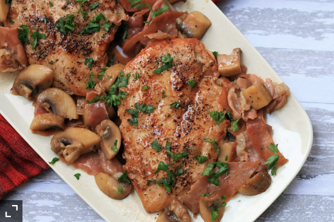

Delicious Marsala
Marsala Steak

Description
Here is one of my favorite dishes, a pretty simple, pretty fast to make dish, that can fit well in most of the occasions.
Ingredients
- Clove of garlic x 2
- Potato x 2
- Meat x 500g
- Marsala wine x 250ml
- Beef bouillon cube x 1
- Champignon mushrooms x 1 can
- Butter x 50g
- Salt
- Pepper
- Parsley
- Onion x 1
- Flour 1 spoon
- Milk x 30ml
- Oil x tablespoon
Steps
- Chop the garlic clove and onion.
- Cut the meat into cubes
- Dissolve the beef bouillon cube in warm water.
- Put the chopped garlic in a saucepan with oil over low heat.
- When the garlic begins to brown, add the onion and stir.
- When the onion is soft, add the butter and the dissolved beef bouillon cube dissolved
- Put salt, pepper and parsley to your liking, take notice that the beef bouillon adds salt to the mix too
- When the butter is melted, add the meat,the wine and turn up the heat using a lid to make it boil faster.
- Once boiling, lower the heat and leave uncovered for 15 to 20 minutes for the alcohol to evaporate.
- Once the alcohol has evaporated, add 1 tablespoon of flour, a little milk and the mushrooms.
- leave it on the fire for about 5 minutes and it is ready to serve.
- French fries make a great side dish.
Home